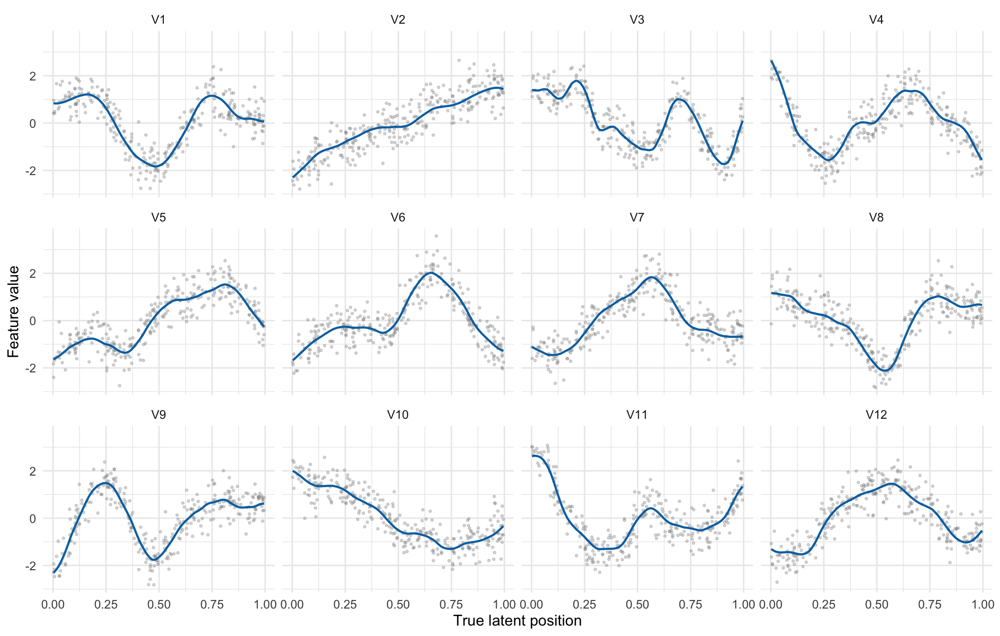
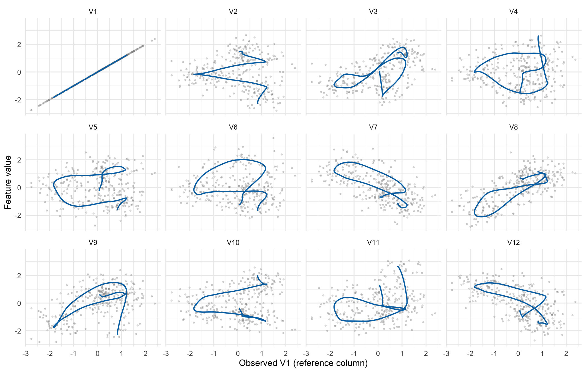
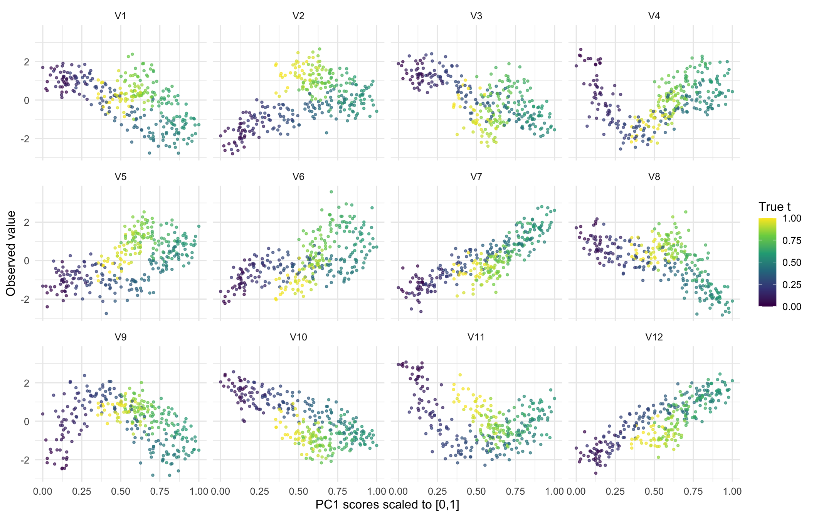
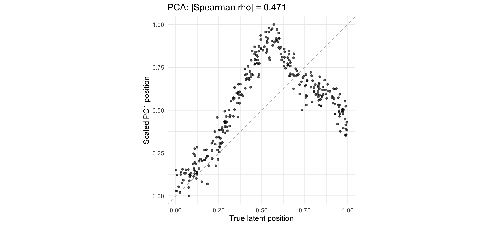
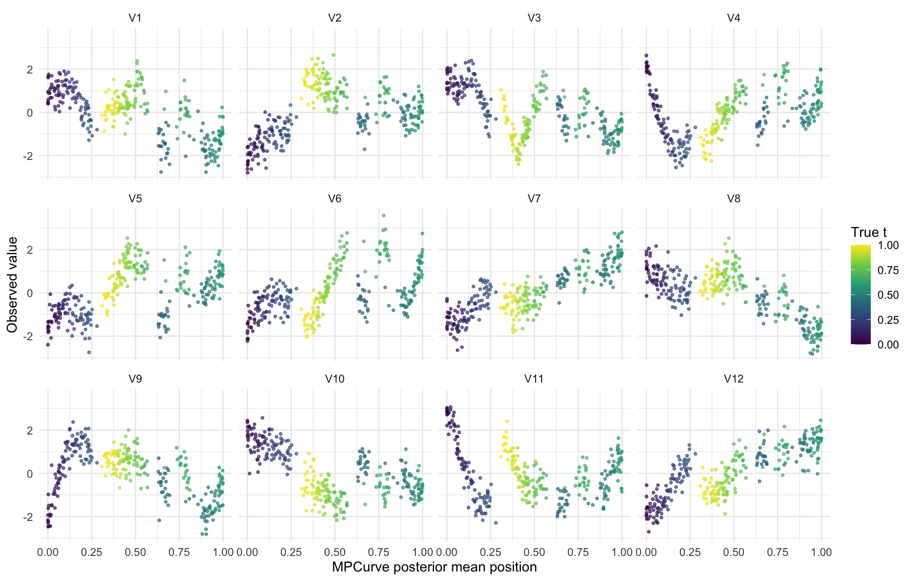
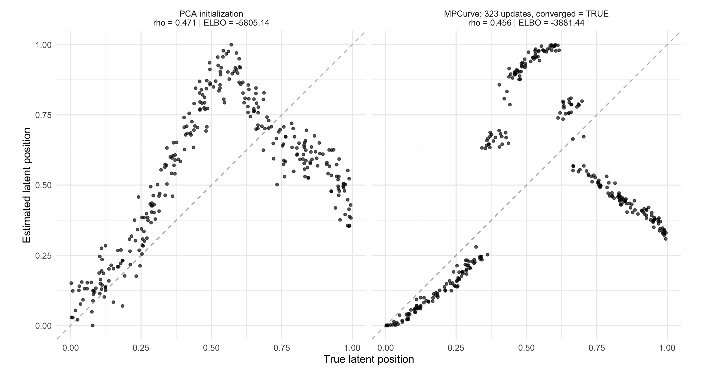

Here we store the simulation configurations, including the number of
samples (n), number of columns (p), and the
signal to noise ratio (snr).
config <- list(
# Data generation
seed = 20260932L, n = 300L, p = 12L, snr = 4,
generator = "matern", # "matern" or "fourier"
# For MPCurve fitting
K = 50L, position_prior = "fixed", # "fixed" = uniform; or "adaptive"
max_iter = 2000L, tol = 1e-6
)simulate_signal <- function(t, p, config) {
if (config$generator == "matern") {
covariance <- fields::Matern(abs(outer(t, t, "-")),
aRange = 0.1,
smoothness = 2.5)
L <- t(chol(covariance + diag(1e-10, length(t))))
return(L %*% matrix(rnorm(length(t) * p), length(t), p))
}
if (config$generator == "fourier") {
h <- 2:6; decay <- 1.5;
angles <- outer(t, pi * h)
a <- matrix(rnorm(length(h) * p), length(h), p)
b <- matrix(rnorm(length(h) * p), length(h), p)
return(sin(angles) %*% (h^(-decay) * a) +
cos(angles) %*% (h^(-decay) * b))
}
stop("Unknown generator: ", config$generator)
}
simulate_data <- function(config) {
stopifnot(config$n > config$K, config$p >= 1, config$snr > 0)
set.seed(config$seed)
t <- runif(config$n)
signal <- simulate_signal(t, config$p, config)
stopifnot(identical(dim(signal), c(config$n, config$p)),
all(is.finite(signal)), all(apply(signal, 2, sd) > 0))
signal <- scale(signal) # unit signal variance per column
# Separate noise seed keeps noise fixed when changing the generator.
set.seed(config$seed + 1L)
X <- signal + matrix(rnorm(length(signal)), nrow(signal)) / sqrt(config$snr)
colnames(X) <- colnames(signal) <- paste0("V", seq_len(config$p))
list(t = t, signal = signal, X = X)
}
data <- simulate_data(config)scale01 <- function(x) {
stopifnot(diff(range(x)) > 0)
(x - min(x)) / diff(range(x))
}
recovery <- function(x, truth) abs(cor(x, truth, method = "spearman"))
feature_frame <- function(values, position, truth) {
do.call(rbind, lapply(seq_len(ncol(values)), function(j)
data.frame(position = position, value = values[, j], truth = truth,
feature = factor(colnames(values)[j], levels = colnames(values)))))
}
plot_features <- function(data, position, signal_position = NULL,
xlabel = deparse(substitute(position))) {
observed <- feature_frame(data$X, position, data$t)
if (is.null(signal_position)) {
ggplot(observed, aes(position, value, color = truth)) +
geom_point(size = 0.8, alpha = 0.65) +
scale_color_viridis_c(name = "True t", limits = c(0, 1)) +
facet_wrap(~feature, ncol = 4) + labs(x = xlabel, y = "Observed value")
} else {
idx <- order(data$t)
paths <- feature_frame(data$signal[idx, , drop = FALSE],
signal_position[idx], data$t[idx])
ggplot(observed, aes(position, value)) +
geom_point(color = "gray55", size = 0.6, alpha = 0.3) +
geom_path(data = paths, color = "#0072B2", linewidth = 0.8) +
facet_wrap(~feature, ncol = 4) + labs(x = xlabel, y = "Feature value")
}
}plot_features(data, data$t, signal_position = data$t,
xlabel = "True latent position")
Figure 1. Features versus true t. Blue paths join noiseless values in true-position order; gray points are observations.
j <- 1
plot_features(data, data$X[, j], signal_position = data$signal[, j],
xlabel = sprintf("Observed %s (reference column)", colnames(data$X)[j]))
Figure 2. Features versus the reference column. Blue paths are noiseless pairs; gray points contain noise on both axes.
We first try using PC1 as the ordering initialization.
pca <- prcomp(data$X, center = TRUE, scale. = FALSE)
pc_raw <- pca$x[, 1]
direction <- if (cor(pc_raw, data$t, method = "spearman") < 0) -1 else 1
pc_position <- scale01(direction * pc_raw)Take a look at the columns ordered by the PCA positions.
plot_features(data, pc_position, xlabel = "PC1 scores scaled to [0,1]")
Figure 3. Observations versus scaled PC1 scores; colors indicate true t.
Compare the PCA positions against the true latent positions.
ggplot(data.frame(truth = data$t, estimate = pc_position), aes(truth, estimate)) +
geom_abline(slope = 1, intercept = 0, linetype = 2, color = "gray70") +
geom_point(alpha = 0.65, size = 1.2) + coord_equal() +
labs(x = "True latent position", y = "Scaled PC1 position",
title = sprintf("PCA: |Spearman rho| = %.3f", recovery(pc_position, data$t)))
Figure 4. PCA positions versus true t. Dashed line: identity.
Now let’s try using MPCurve to improve the PC initialization.
fit <- MPCurver::fit_mpcurve(X = data$X, K = config$K,
position_prior = config$position_prior,
method = "PCA",
iter = config$max_iter, tol = config$tol)Compute the posterior mean positions from the fitted MPCurve.
mp_position <- as.numeric(fit$gamma %*% seq(0, 1, length.out = config$K))
if (direction < 0) mp_position <- 1 - mp_position
initial_elbo <- head(fit$elbo_trace, 1)
final_elbo <- tail(fit$elbo_trace, 1)
# Keep convergence status visible even when the iteration budget is exhausted.
data.frame(version = as.character(packageVersion("MPCurver")),
iterations = fit$iter, converged = fit$converged,
initial_ELBO = initial_elbo, final_ELBO = final_elbo) version iterations converged initial_ELBO final_ELBO
1 0.3.4 323 TRUE -5805.138 -3881.444Plot the columns ordered by the MPCurve posterior mean positions.
plot_features(data, mp_position, xlabel = "MPCurve posterior mean position")
Figure 5. Observations versus MPCurve posterior mean positions; colors indicate true t.
Compare the MPCurve posterior mean positions against the true latent positions.
labels <- c(
sprintf("PCA initialization\nrho = %.3f | ELBO = %.2f",
recovery(pc_position, data$t), initial_elbo),
sprintf("MPCurve: %d updates, converged = %s\nrho = %.3f | ELBO = %.2f",
fit$iter, fit$converged, recovery(mp_position, data$t), final_elbo))
comparison <- data.frame(
truth = rep(data$t, 2), estimate = c(pc_position, mp_position),
stage = factor(rep(labels, each = length(data$t)), levels = labels))
ggplot(comparison, aes(truth, estimate)) +
geom_abline(slope = 1, intercept = 0, linetype = 2, color = "gray70") +
geom_point(alpha = 0.65, size = 1.2) + facet_wrap(~stage, nrow = 1) +
coord_equal(xlim = c(0, 1), ylim = c(0, 1)) +
labs(x = "True latent position", y = "Estimated latent position")
Figure 6. Before/after comparison against true t, with the same orientation. Initial ELBO is evaluated after PCA quantile discretization and variational initialization, before CAVI updates.